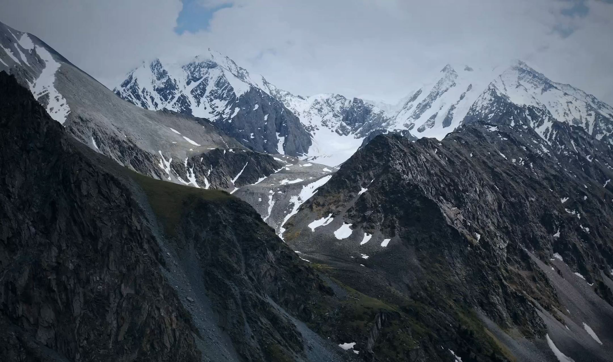
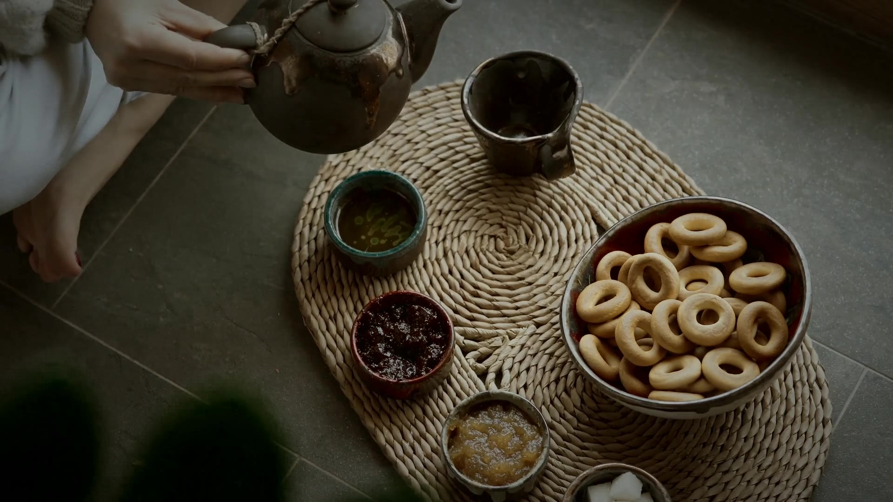

01About the projectALTAI · 2026

A winter journey to Altai,
from the first doubt
to the meeting point
Before a trip, people need to know whether the format suits them: the load, the conditions, the team and the full budget. After booking, the task changes: find the meeting point, contacts and packing list fast. ALTAI brings both into one product.
Originally created in 2024 as a commercial participant guide, ALTAI was independently reimagined in 2026 as a travel website with an integrated participant guide.


- Type
- Self-initiated UX/UI concept
- Origin
- Commercial guide, 2024
- Role
- Research, UX, UI, design system
- Scope
- Landing page, request, guide
- Platforms
- Desktop, tablet, mobile
- Timeline
- Oct — Nov 2026
02
Discovery & Strategy
Before designing screens, I looked at what people check before a group trip — and what they still need once they have booked.
03
Design
From structure to screens: how the programme block took shape, and the visual language around it.